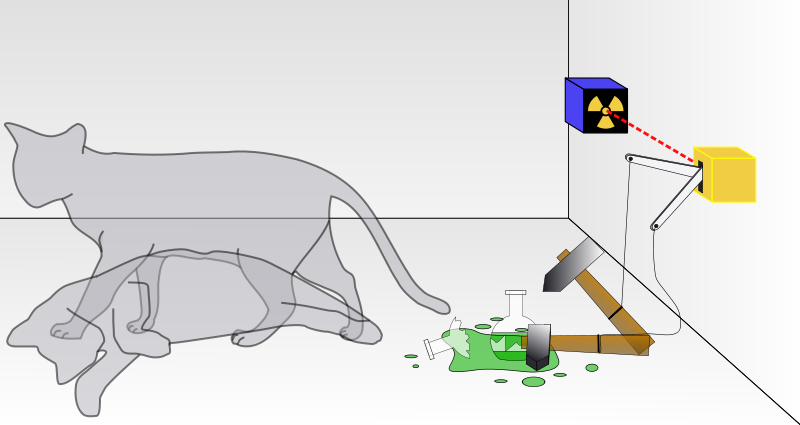

phoeagon
/dev/random as a service.
Go here or go CLI-ish:
curl http://dev-random-as-a-service.appspot.com/dev/urandom&count=34?io=binary
Use non-blocking /dev/urandom, or check for entropy level before using /dev/random.
curl http://dev-random-as-a-service.appspot.com/proc/sys/kernel/random/entropy_avail
Cloud computing era has come and now virtually everything is a service. You create documents, upload files, deploy websites. You can get movies, software, etc. But what if you want some random garbage?
IaaS, SaaS, PaaS, DaaS, we proudly present DRaaS.
Start to use our /dev/random-as-a-service` to get random garbage today!
No need to worry if your random generator on your computer is good enough.
Switch to our DRaaS, a distributed service available in and optimized for
countries worldwide.
/dev/random-as-a-service is maintained by a team of software engineers
who have failed at finding their girlfriends in real life. Our first-hand
experiences in generating non-sense garbage at datings is more than awesome!
Over the years we have creating tons of random garbage orally and electronically. So we start this business out of our strengths.

/dev/randomQuote wikipedia:
In Unix-like operating systems,
/dev/randomis a special file that serves as a blocking pseudorandom number generator. It allows access to environmental noise collected from device drivers and other sources.
/dev/random, blocks if
entropy exhausted.Unified API access for randomness, on all major platforms.
Android Windows Linux Unix MacOS iOS
We support Big Data!
/dev/random and a /dev/urandom that generates
tons of garbage./dev/random as well! Feel at home
and build your identity with our community![1] 
ioctl to increase entropy count!/dev/random-as-a-service, the communication
between the server and you is protected by
Attorney Client Privilege .[1] Because we never have the resources to do so. This may change to ensure compliance with authority regulations[2], and we may be compelled to do so without prior notifications.
[2] Authority includes but not limited to Google, Github, NSA, CIA, KGB, CCP, our romantic partners (should they appear in the future).
N/A
An HTTP-based API is provided for access to /dev/random and /dev/urandom.
The API is simple and elegant. Do an HTTP GET to get the random garbage you want, and we take care of the rest! Our powerful servers across the globe provide you with high-quality random garbage for free!
$ curl http://dev-random-as-a-service.appspot.com/dev/urandom
c977187c45a5d4b5f495364be3fcccfd442b6d1400a872acadbb2067bac0749a4a6
<...truncated>
240e045420e8eaeedba32d5ee3860265d8a888dfa957faf7fa3451d00c46b3e3cb4
We support the following parameters to be sent in the URL.
non-block: Include this parameter, regardless of its value,
ensures that the request doesn't block due to lack of
entropy. This is useful for `/dev/random`, which by default
blocks if entropy level is not enough for your request.
count: The number of random bytes to acquire. The limitation depends
on the quota of your subscription plan. For free users, it's
limited to 4096.
io: either 'binary' or 'text'. Default is 'text', which converts
random data to its corresponding hexidecimal representation
for human-readability.
For example, to get 1234 bytes of random data as binary stream from
/dev/random, and force server to return a status code of 503 Service Unavailable
when entropy is not enough, use:
curl "http://dev-random-as-a-service.appspot.com/dev/random?io=binary&count=1234&non-block=a"
Issue a POST request to /dev/random.
curl -v -d @my_password_list.txt -X POST http://dev-random-as-a-service.appspot.com/dev/random
On success, a status code of 202 Accepted is returned.
/dev/randomThis API is premium only.
Issue GET/POST request to /ioctl/<fd>/<OPERATION>/<param>/.
According to man 4 random, <OPERATION> may be:
RNDGETENTCNT
RNDADDTOENTCNT
RNDADDENTROPY
RNDZAPENTCNT
...
<fd> indicates the file descriptor and may be any integer. <param>
depends on <OPERATIONS> and you should consult the manual for detailed
usage.
For example, to check the entropy level, use:
$ curl http://dev-random-as-a-service.appspot.com/ioctl/4/RNDGETENTCNT/4/
8192
<Your result may differ>
To increase the entropy level by 30, use:
$ curl http://dev-random-as-a-service.appspot.com/ioctl/4/RNDADDTOENTCNT/20/
(We have a fancy nuclear based randomness generator that refills the entropy pool every some interval.)
/proc/sys/kernel/random/entropy_avail APIThis is an HTTP-GET API to get the entropy level.
$ curl http://dev-random-as-a-service.appspot.com/proc/sys/kernel/random/entropy_avail
8192
<Your result may differ>
This differs from the IOCTL version for it's not restricted to permium users.
For ease of illustration we use requests.
import requests
req = requests.get('http://dev-random-as-a-service.appospot.com/dev/urandom')
if req.status_code != 200:
print "ERR"
else:
print req.text
We implemented our service using the device of Schrodinger's Cat.

To start your own, firstly you need a cat farm.
phoeagon
Other projects: